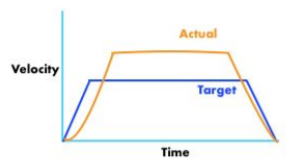
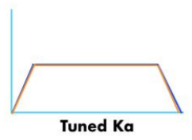

Tuning¶
Oh no! The bot doesn’t move! That’s because you need to tune.
Setting up the code:¶
Set the path as a long (~half the field) straight line.
Go to
Constants.javaand changeConstants.AutoConstants.MAX_VELandConstants.AutoConstants.MAX_ACCELto something reasonable (it really depends on how fast the chassis is. But try to keep it at a safe speed)Set
Constants.ChassisConstants.kVto a small number like0.5
Now you’re basically ready to go! But in order to tune effectively, we need to see how the bot reacts to different inputs. Thus, we can use Glass to view velocity graphs.
Setting up Glass:¶
Open up WPIlib Glass
Configure these settings and click apply

Note
Make sure to change “Team/IP” to your correct team number
Go to “Plot” in the toolbar and select “New Plot Window”
Click “Add Plot”
Do steps 3 & 4 twice to add 2 plots
From the “NetworkTables” tab, drag and drop “actual left vel” and “desired left vel” to one of the plots and “actual right vel” and “desired right vel” to the other plot
Now, all the velocities will be graphed when you run the path.
Running the Code and Tuning:¶
Now your ready to run the code!
Keep running the code until the max actual velocity is around the same place as the max desired velocity.
And then…

Next we will tune the kA. Keep tuning the KA until the accerlation and deceleration parts of the profile matches between the actual and desired velocities. It should end up like this:
Next we will tune the kP. Keep tuning the kP until the actual graph matches the desired graph even better.

Note
It is okay if the robot does not drive straight. We will correct this later on.
Correcting for Positional Error:¶
What RAMSETE, a nonlinear state-space feedback controller, does is that it looks at the robot’s current position and corrects its velocities based on the calculated error.
To add RAMSETE, go to TrajectoryFollower.java, and uncomment line 61 and comment line 62.
…. image:: ../images/ramsete.jpg